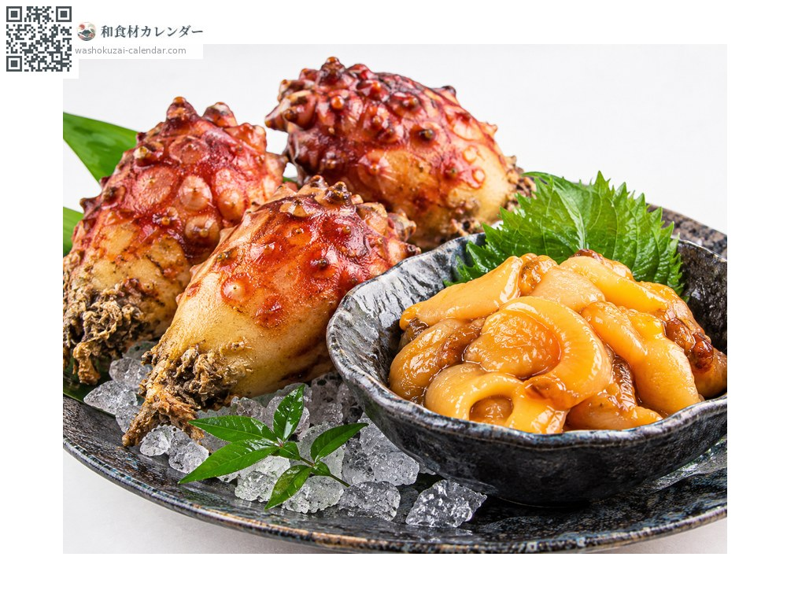
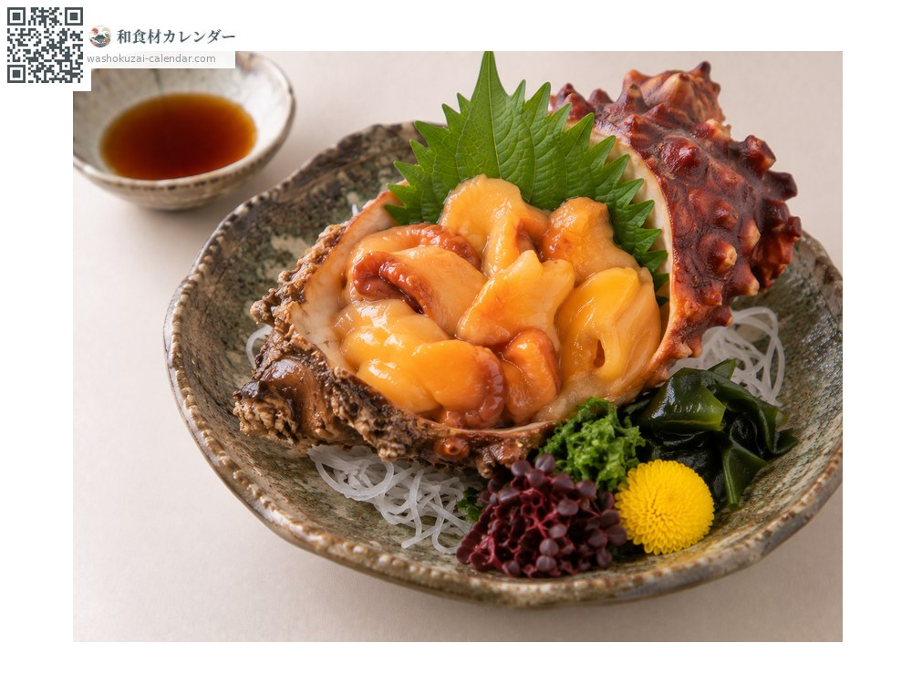
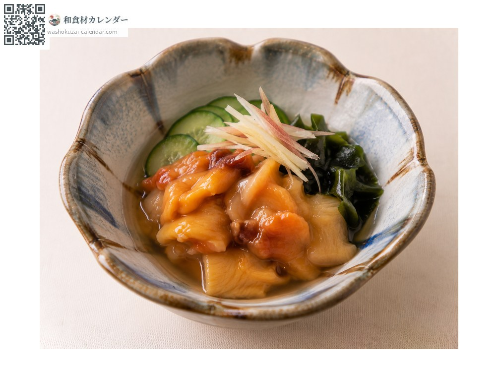
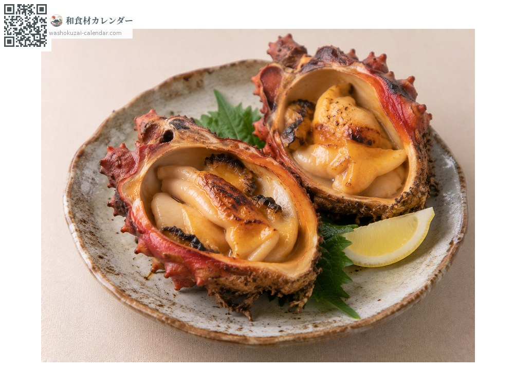
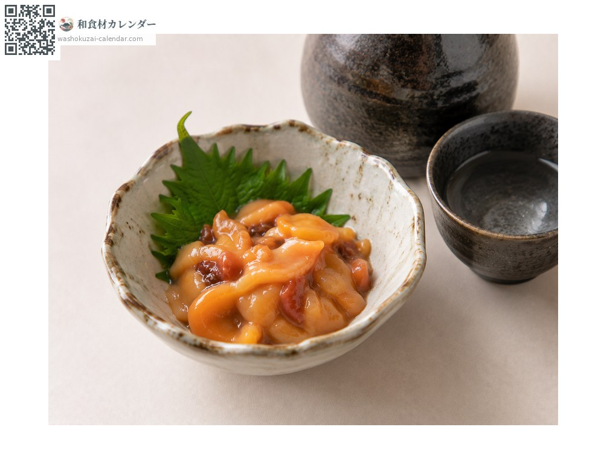

Seafood
Sea pineapple
ホヤ ほや hoya
Also known ashoya
At its best in Jun, Jul, Aug

When it is at its best
Jan
Feb
Mar
Apr
May
Jun
Jul
Aug
Sep
Oct
Nov
Dec
In seasonAvailable
How to cook

Sashimi
Distinctive aroma and sweetness. With vinegared soy sauce.

Sunomono (vinegared dish)
Dressed with cucumber.

Grilled sea pineapple
Grilled in the shell.

Shiokara (salt-fermented seafood)
A pungent delicacy.
How to choose
Well-formed bumps on the surface, a firm body and a vivid orange colour.
Storage
Spoils quickly and turns bitter with time; eat the same day.
Main areas
Good to know
Sanriku in Miyagi is the main source. Sometimes called the sea pineapple. Freshness makes a great difference to the taste.
At their best around the same time
 Japanese horse mackerel
Japanese horse mackerel White trevally
White trevally Japanese sardine
Japanese sardine Gizzard shad
Gizzard shad Greater amberjack
Greater amberjack Yellowfin tuna
Yellowfin tuna Flying fish
Flying fish Striped beakfish
Striped beakfish